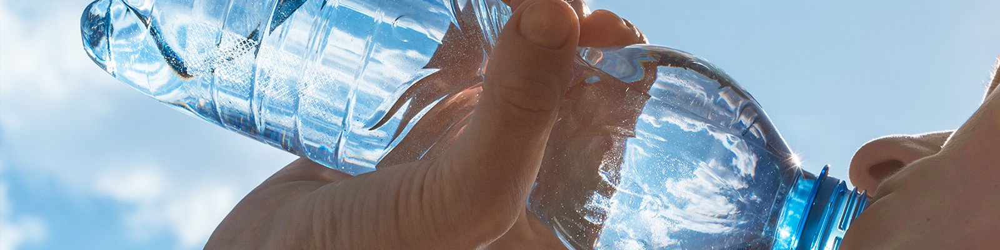

코오롱 인더스트리의 제품은 세계적인 기술력을 가진
다양한
석유수지를 개발, 생산함으로써 세계시장을 선도해가고 있습니다.
석유수지
- SUKOREZ
- SUKOREZ : 수코레즈 우수한 색상, 뛰어난 열안정성, 저취기, 우수한 용해성 EVA, SIS, SBS, APAO등 각종 폴리머와의 상용성 우수하다는 특징을 가지고 있습니다. 제품용도로는 열용융형 접착제(HMA), 위생용품용 열용융형 접착제(HMPSA), 폴리머 개질 (PP modifier), 각종 접착제 등이 있습니다.
- HIKOREZ
- HIKOREZ : 하이코레즈 각종 엘라스토머들과 좋은 상용성을 나타내고 다양한 유기용제들과의 용해성 우수한 제품으로 접착 테이프, 열용융성 접착제(HMA), 도로 표시제(HMRM), 아스팔트 첨가제, 타이어, 각종 접착제에 사용됩니다.
- HIKOTACK
- HIKOTACK : 하이코텍 적용분야별 요구에 따라 연화점 90℃부터 160℃까지 다양한 종류의 제품 선택이 가능하고 각종 접착제, 고무배합 가공 보조제, 페인트 및 잉크 첨가제, 아스팔트 첨가제에 사용됩니다.
페놀수지
- HIRENOL
- HIRENOL : 하이레놀 우수한 내열성, 내약품성, 치수안정성, 전기절연성, 기계적 강도의 특징이 있으며 범용수지 부문 용도로는 주물(엔진제작, 거푸집 용도), 지석(Grinding Wheel), 연마포, 마찰재(브레이크), FELT(자동차내장재), 성형(전기소켓, 압력밥솥 뚜껑 등), 내화물(용광로 등 내화제 BINDER) 등이 있으며, Advance 부문 용도로는 접착제, 도료(친환경), 잉크(신문잉크 등), 타이어/고무(점착부여제, 스틸로드 접착제, 경도보강제, 기류제), Fabric 타이어코드 접착제, 전자 재료(반도체용, EMC, PCB 등)가 있습니다.
에폭시수지
- HIROXY
- HIROXY : 하이록시 하이록시 (HiROXY - High performance REsin of epOXY)은 코오롱 인더스트리가 생산하는 에폭시수지의 브랜드명으로 우수한 기술력과 철저한 고객 서비스를 바탕으로 고객의 Needs를 만족시켜주는 제품입니다. 에폭시수지는 현재까지 개발된 고분자제품 중 가장 고기능성을 가진 제품 중 하나로 거의 모든 산업분야에서 사용되고 있습니다. 자동차, TV, PC, 핸드폰에 사용되는 첨단 전자회로부터 항공우주산업의 구조물, 다양한 용도의 페인트, 서핑용 보드에 이르기까지 여러분의 주변에서 쉽게 찾을 수 있습니다. 특히 코오롱 인더스트리는 축적된 경험과, 경화제-중간체-에폭시의 수직 계열화된 제품 포트폴리오에 근거한 경쟁력 있는 제품으로 고객만족을 꾀하고, 친환경소재의 수요증가에 따라 Green Epoxy와 다양한 종류의 특수에폭시/특수 경화제를 공급하며 고기능성 시장을 선도해 나가고 있습니다.
PU/TPU
- PU/TPU
- PU 코오롱 인더스트리는 오랜 경험과 우수한 기술력을 바탕으로 우리 생활주변에서 널리 사용되는 다양한 종류의 우레탄 제품을 공급하고 있습니다. 건물의 방수재나 인테리어 바닥재로 쓰이는 우레탄, 우레아, 에폭시 및 다양한 종류의 복합재료로부터 육상트랙, 농구코트, 롤러스케이트장 등의 경기장 바닥재까지 코오롱이 공급하고 있습니다. 또한 방수/방풍용 의류나 등산용품에도 코오롱 인더스트리의 우레탄이 사용되고 있습니다.
- TPU 하얀 설원을 달리는 스키어가 착용한 고글, 사람들의 발을 보호하는 신발창, 차량과 운전자의 안전을 지키는 스노우 체인과 에어백 등에는 코오롱 인더스트리의 열가소성 폴리우레탄수지인 ELLAS가 있습니다. ELLAS는 고무의 성질과 플라스틱의 성질을 동시에 가지고 있는 고기능성 수지로 삶의 질적 향상을 추구하는 현대인들이 증가함에 따라 ELLAS의 활용분야는 더욱 확대되고 있습니다.
PET

- INOPET
- INOPET : 이노펫 INOPET (INNOVATION + PET)은 코오롱인더스트리㈜가 생산하는 PET수지의 브랜드명으로 뛰어난 품질과 최적화된 성능으로 고객의 Needs를 만족시켜주는 제품입니다. PET수지는 코오롱 인더스트리의 주된 산업분야인 Tirecord, Film, Spunbond, Plastics 등의 주원료로 널리 사용되고 있으며, 일반적으로 섬유용, 필름용 등으로 사용됩니다. 특히 코오롱 인더스트리는 축적된 생산 노하우와 연속공정으로 생산된 균일한 품질의 제품을 공급함으로써 고객에게 뛰어난 생산성을 제공하며, 고객의 만족을 최우선으로 생각하여 고객 맞춤 서비스를 제공하고 있습니다.